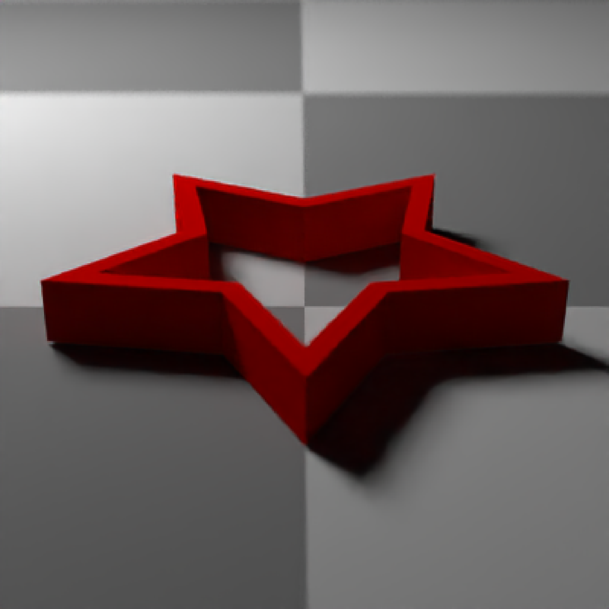
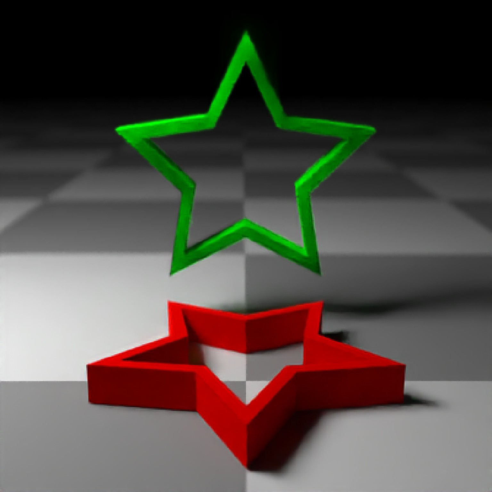
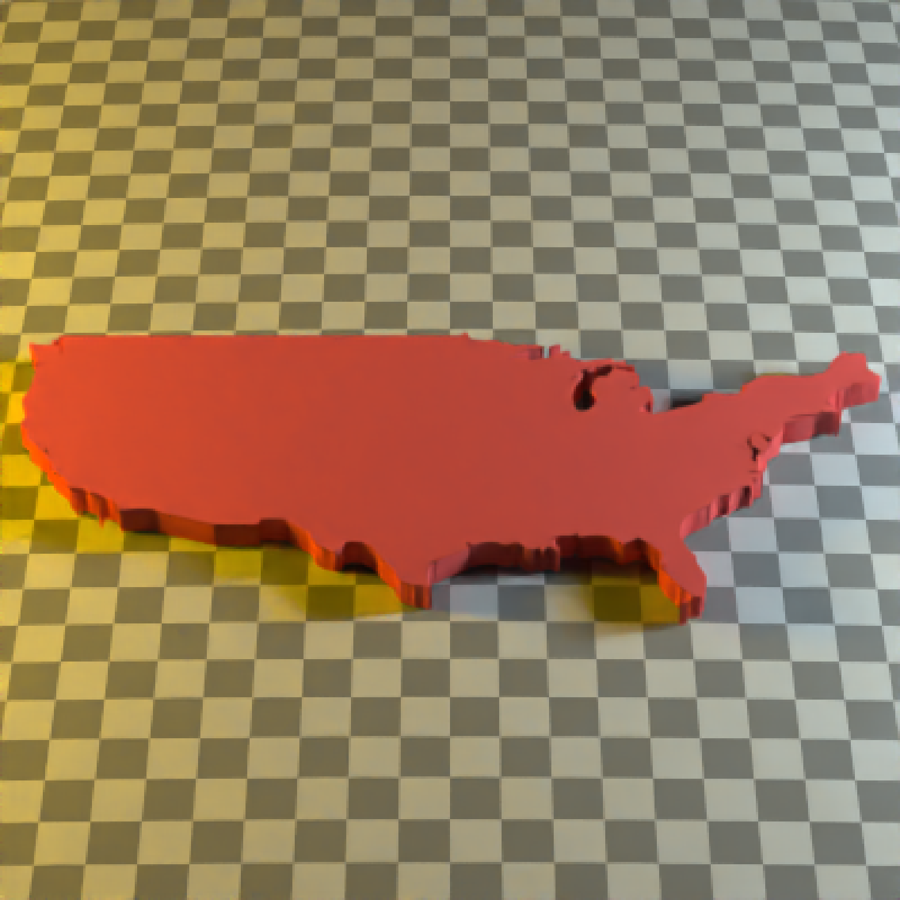

Extruded Polygon Object
extruded_polygon( polygon = NULL, x = 0, y = 0, z = 0, plane = "xz", top = 1, bottom = 0, holes = NULL, angle = c(0, 0, 0), order_rotation = c(1, 2, 3), pivot_point = c(0, 0, 0), material = diffuse(), center = FALSE, flip_horizontal = FALSE, flip_vertical = FALSE, data_column_top = NULL, data_column_bottom = NULL, scale_data = 1, scale = c(1, 1, 1), material_id = NA )
| polygon | `sf` object, "SpatialPolygon" `sp` object, or xy coordinates of polygon represented in a way that can be processed by `xy.coords()`. If xy-coordinate based polygons are open, they will be closed by adding an edge from the last point to the first. |
|---|---|
| x | Default `0`. x-coordinate to offset the extruded model. |
| y | Default `0`. y-coordinate to offset the extruded model. |
| z | Default `0`. z-coordinate to offset the extruded model. |
| plane | Default `xz`. The plane the polygon is drawn in. All possibile orientations are `xz`, `zx`, `xy`, `yx`, `yz`, and `zy`. |
| top | Default `1`. Extruded top distance. If this equals `bottom`, the polygon will not be extruded and just the one side will be rendered. |
| bottom | Default `0`. Extruded bottom distance. If this equals `top`, the polygon will not be extruded and just the one side will be rendered. |
| holes | Default `0`. If passing in a polygon directly, this specifies which index represents the holes in the polygon. See the `earcut` function in the `decido` package for more information. |
| angle | Default `c(0, 0, 0)`. Angle of rotation around the x, y, and z axes, applied in the order specified in `order_rotation`. |
| order_rotation | Default `c(1, 2, 3)`. The order to apply the rotations, referring to "x", "y", and "z". |
| pivot_point | Default `c(0,0,0)`. Point at which to rotate the polygon around. |
| material | Default |
| center | Default `FALSE`. Whether to center the polygon at the origin. |
| flip_horizontal | Default `FALSE`. Flip polygon horizontally in the plane defined by `plane`. |
| flip_vertical | Default `FALSE`. Flip polygon vertically in the plane defined by `plane`. |
| data_column_top | Default `NULL`. A string indicating the column in the `sf` object to use to specify the top of the extruded polygon. |
| data_column_bottom | Default `NULL`. A string indicating the column in the `sf` object to use to specify the bottom of the extruded polygon. |
| scale_data | Default `1`. If specifying `data_column_top` or `data_column_bottom`, how much to scale that value when rendering. |
| scale | Default `c(1, 1, 1)`. Scale transformation in the x, y, and z directions. If this is a single value, number, the object will be scaled uniformly. Note: emissive objects may not currently function correctly when scaled. |
| material_id | Default `NA`. A unique label/number to ensure the material is shared between all triangles that make up the extruded polygon. Required if the material is `dielectric()`. |
Multiple row tibble describing the extruded polygon in the scene.
#Manually create a polygon object, here a star: angles = seq(0,360,by=36) xx = rev(c(rep(c(1,0.5),5),1) * sinpi(angles/180)) yy = rev(c(rep(c(1,0.5),5),1) * cospi(angles/180)) star_polygon = data.frame(x=xx,y=yy) # \donttest{ generate_ground(depth=0, material = diffuse(color="grey50",checkercolor="grey20")) %>% add_object(extruded_polygon(star_polygon,top=0.5,bottom=0, material=diffuse(color="red",sigma=90))) %>% add_object(sphere(y=4,x=-3,z=-3,material=light(intensity=30))) %>% render_scene(parallel=TRUE,lookfrom = c(0,2,3),samples=400,lookat=c(0,0.5,0),fov=60)# } #Now, let's add a hole to the center of the polygon. We'll make the polygon #hollow by shrinking it, combining it with the normal size polygon, #and specify with the `holes` argument that everything after `nrow(star_polygon)` #in the following should be used to draw a hole: hollow_star = rbind(star_polygon,0.8*star_polygon) # \donttest{ generate_ground(depth=-0.01, material = diffuse(color="grey50",checkercolor="grey20")) %>% add_object(extruded_polygon(hollow_star,top=0.25,bottom=0, holes = nrow(star_polygon) + 1, material=diffuse(color="red",sigma=90))) %>% add_object(sphere(y=4,x=-3,z=-3,material=light(intensity=30))) %>% render_scene(parallel=TRUE,lookfrom = c(0,2,4),samples=400,lookat=c(0,0,0),fov=30)# } # Render one in the y-x plane as well by changing the `plane` argument, # as well as offset it slightly. # \donttest{ generate_ground(depth=-0.01, material = diffuse(color="grey50",checkercolor="grey20")) %>% add_object(extruded_polygon(hollow_star,top=0.25,bottom=0, holes = nrow(star_polygon), material=diffuse(color="red",sigma=90))) %>% add_object(extruded_polygon(hollow_star,top=0.25,bottom=0, y=1.2, z=-1.2, holes = nrow(star_polygon) + 1, plane = "yx", material=diffuse(color="green",sigma=90))) %>% add_object(sphere(y=4,x=-3,material=light(intensity=30))) %>% render_scene(parallel=TRUE,lookfrom = c(0,2,4),samples=400,lookat=c(0,0.9,0),fov=40)# } # Now add the zy plane: # \donttest{ generate_ground(depth=-0.01, material = diffuse(color="grey50",checkercolor="grey20")) %>% add_object(extruded_polygon(hollow_star,top=0.25,bottom=0, holes = nrow(star_polygon) + 1, material=diffuse(color="red",sigma=90))) %>% add_object(extruded_polygon(hollow_star,top=0.25,bottom=0, y=1.2, z=-1.2, holes = nrow(star_polygon) + 1, plane = "yx", material=diffuse(color="green",sigma=90))) %>% add_object(extruded_polygon(hollow_star,top=0.25,bottom=0, y=1.2, x=1.2, holes = nrow(star_polygon) + 1, plane = "zy", material=diffuse(color="blue",sigma=90))) %>% add_object(sphere(y=4,x=-3,material=light(intensity=30))) %>% render_scene(parallel=TRUE,lookfrom = c(-4,2,4),samples=400,lookat=c(0,0.9,0),fov=40)# } #We can also directly pass in sf polygons: if("spData" %in% rownames(utils::installed.packages())) { us_states = spData::us_states texas = us_states[us_states$NAME == "Texas",] #Fix no sfc class in us_states geometry data class(texas$geometry) = c("list","sfc") } #This uses the raw coordinates, unless `center = TRUE`, which centers the bounding box #of the polygon at the origin. # \donttest{ generate_ground(depth=-0.01, material = diffuse(color="grey50",checkercolor="grey20")) %>% add_object(extruded_polygon(texas, center = TRUE, material=diffuse(color="#ff2222",sigma=90))) %>% add_object(sphere(y=30,x=-30,radius=10, material=light(color="lightblue",intensity=40))) %>% render_scene(parallel=TRUE,lookfrom = c(0,10,-10),samples=400,fov=60)# } #Here we use the raw coordinates, but offset the polygon manually. # \donttest{ generate_ground(depth=-0.01, material = diffuse(color="grey50",checkercolor="grey20")) %>% add_object(extruded_polygon(us_states, x=-96,z=-40, top=2, material=diffuse(color="#ff2222",sigma=90))) %>% add_object(sphere(y=30,x=-100,radius=10, material=light(color="lightblue",intensity=200))) %>% add_object(sphere(y=30,x=100,radius=10, material=light(color="orange",intensity=200))) %>% render_scene(parallel=TRUE,lookfrom = c(0,120,-120),samples=400,fov=20)# } #We can also set the map the height of each polygon to a column in the sf object, #scaling it down by the maximum population state. # \donttest{ generate_ground(depth=0, material = diffuse(color="grey50",checkercolor="grey20",sigma=90)) %>% add_object(extruded_polygon(us_states, x=-96,z=-45, data_column_top = "total_pop_15", scale_data = 1/max(us_states$total_pop_15)*5, material=diffuse(color="#ff2222",sigma=90))) %>% add_object(sphere(y=30,x=-100,z=60,radius=10, material=light(color="lightblue",intensity=250))) %>% add_object(sphere(y=30,x=100,z=-60,radius=10, material=light(color="orange",intensity=250))) %>% render_scene(parallel=TRUE,lookfrom = c(-60,50,-40),lookat=c(0,-5,0),samples=400,fov=30)# }